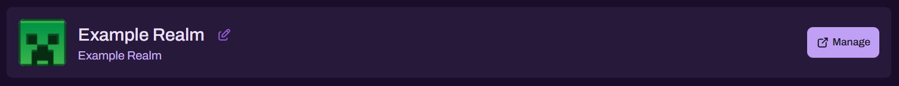
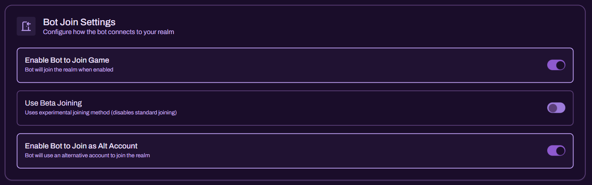
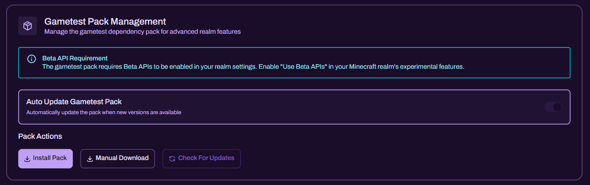
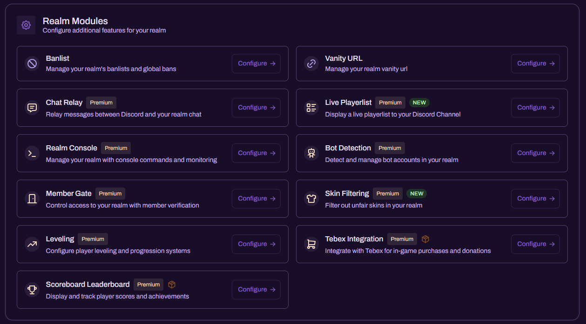

Overview

This page serves as the central management hub for your connected Realm. From here, you can access your Realm’s core configuration, control how Realm Bot joins your world, manage Gametest pack dependencies (where required), and configure any Premium modules you have enabled.
Manage Your Realm
At the top of the page you will see your selected Realm card. This is the primary entry point for managing Realm-specific configuration and quickly confirming you are working on the correct Realm.

Use the Manage button to open the Realm’s management view and access the settings shown below.
Bot Join Settings
Bot Join Settings determine how Realm Bot connects to your Realm. These options are operational controls and should be configured with reliability and safety in mind.

Key options include:
-
Enable Bot to Join Game
Allows Realm Bot (via the Relay Account) to join your Realm when required by features that depend on an in-game executor. -
Use Beta Joining
Uses an experimental joining method (disables the standard joining method). This should only be enabled if instructed or if standard joining is not functioning reliably in your environment. -
Enable Bot to Join as Alt Account
Allows Realm Bot to join using an alternative account. This is commonly used when your primary Relay Account must remain reserved for specific workflows or when redundancy is required.
Important: Many modules (for example, Chat Relay, Realm Console, Bot Detection, Member Gate, and Skin Filtering) require an in-game Relay Account to perform actions. If the bot is not in-game, these modules may not function.
Gametest Pack Management
Gametest Pack Management controls the dependency pack used for advanced Realm features that require in-game scripting capabilities. Where a module relies on the Gametest pack, it must be installed and active.

This section includes:
-
Beta API Requirement
Some Gametest functionality requires Beta APIs to be enabled in your Realm settings. If prompted, enable Use Beta APIs under your Realm’s experimental features. -
Auto Update Gametest Pack
Automatically updates the pack when new versions are available (recommended if you prefer minimal maintenance). -
Pack Actions
- Install Pack - installs the dependency pack into the Realm
- Manual Download - provides a download option for manual deployment workflows
- Check For Updates - checks whether a newer pack version is available
Note: If a module is not behaving as expected and it depends on Gametest, first confirm the pack is installed, enabled, and current.
Realm Modules
The Realm Modules section contains all configurable feature modules available for your Realm. Premium modules are clearly marked and can be opened directly via Configure.

From here you can configure all Realm Modules currently available for your Realm:
- Bot Detection - mitigation for malicious bot accounts, including an Experimental mode for stricter detection
- Chat Relay - a two-way chat bridge between your Realm and Discord
- Leveling System - playtime-based XP progression with configurable level-up announcements
- Live Playerlist - automatically publish and refresh a Discord view of which players are online
- Member Gate - rule-based auto-moderation for join restrictions using device, gamerscore, and social metrics
- Realm Console - run Minecraft commands through a secured Discord console channel
- Scoreboard Leaderboards - publish in-game scoreboard rankings to Discord
- Skin Filtering - detect and remove players using irregular or exploit-oriented skins
- Vanity URL - create a branded, stable invite entry point for your Realm
If you also use monetization tooling, see the separate Tebex integration page for store fulfilment setup.
Operational Guidance: Restrict access to high-impact modules (such as Realm Console, Member Gate, and Skin Filtering) to trusted administrators. These features can directly affect gameplay, player access, and server stability.
Recommended Setup Order
For best results, configure your Realm in the following sequence:
- Confirm you are managing the correct Realm (top card).
- Configure Bot Join Settings to ensure reliable in-game connectivity.
- If required, install and validate the Gametest Pack (and enable Beta APIs where prompted).
- Enable and configure the modules you intend to use.
This structure ensures that all dependencies are in place before you rely on any module operationally.